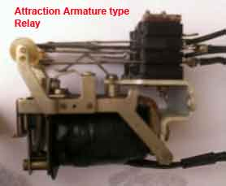
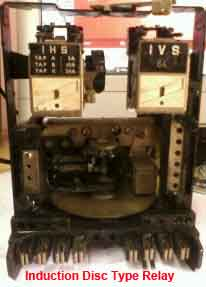
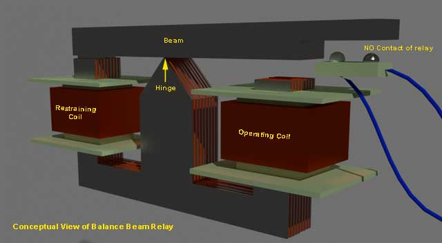
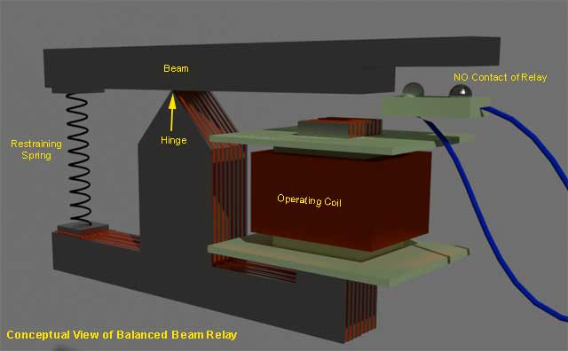

Electromagnetic Relay Working
Attraction Armature Type Relay
Construction of Attracted Type Relay
Induction Disc Type Relay
Induction Disc type Relay Working
Pole Shading Method of Producing Torque in Induction Disc Relay
Induction Cup Type Relay
Induction Cup Type-Directional or Power Relay
Reactance or Mho Type Induction Cup Relay
Balanced Beam Relay
Moving Coil Type Relay
Electromagnetic Relay
Electromagnetic relays are those relays which are operated by electromagnetic action. Modern electrical protection relays are mainly micro processor based, but still electromagnetic relay holds its place. It will take much longer time to be replaced the all electromagnetic relays by micro processor based static relays. So before going through detail of protection relay system we should review the various types of electromagnetic relays.
Electromagnetic Relay Working
Practically all the relaying device are based on either one or more of the following types of electromagnetic relays.
- Magnitude measurement,
- Comparison,
- Ratio measurement.
Principle of electromagnetic relay working is on some basic principles. Depending upon working principle the these can be divided into following types of electromagnetic relays.
- Attracted Armature type relay,
- Induction Disc type relay,
- Induction Cup type relay,
- Balanced Beam type relay,
- Moving coil type relay,
- Polarized Moving Iron type relay.
Attraction Armature Type Relay
Attraction armature type relay is the most simple in construction as well as its working principle. These types of electromagnetic relays can be utilized as either magnitude relay or ratio relay. These relays are employed as auxiliary relay, control relay, over current, under current, over voltage, under voltage and impedance measuring relays.

Hinged armature and plunger type constructions are most commonly used for these types of electromagnetic relays. Among these two constructional design, hinged armature type is more commonly used.
We know that force exerted on an armature is directly proportional to the square of the magnetic flux in the air gap. If we ignore the effect of saturation, the equation for the force experienced by the armature can be expressed as,
Where F is the net force, K' is constant, I is rms electric current of armature coil, and K' is the restraining force.
The threshold condition for relay operation would therefore be reached when KI2 = K'.
If we observe the above equation carefully, it would be realized that the relay operation is dependent on the constants K' and K for a particular value of the coil current.
From the above explanation and equation it can be summarized that, the operation of relay is influenced by
- Ampere – turns developed by the relay operating coil,
- The size of air gap between the relay core and the armature,
- Restraining force on the armature.
Construction of Attracted Type Relay
This relay is essentially a simple electromagnetic coil, and a hinged plunger. Whenever the coil becomes energized the plunger being attracted towards core of the coil. Some NO-NC (Normally Open and Normally Closed) contacts are so arranged mechanically with this plunger, that, NO contacts become closed and NC contacts become open at the end of the plunger movement. Normally attraction armature type relay is dc operated relay. The contacts are so arranged, that, after relay is operated, the contacts cannot return their original positions even after the armature is de energized. After relay operation, this types of electromagnetic relays are reset manually.
Attraction armature relay by virtue of their construction and working principle, is instantaneous
in operation.
Induction Disc Type Relay
Induction disc type relay mainly consists of one rotating disc.
Induction Disc type Relay Working
Every induction disc type relay works on the same well known Ferraries principle
. This principle says, a torque is produced by two phase displaced fluxes, which is proportional to the product of their magnitude and phase displacement between them. Mathematically it can be expressed as-

The induction disc type relay is based on the same principle as that of an ammeter or a volt meter, or a wattmeter or a watt hour mater. In induction relay the deflecting torque is produced by the eddy currents in an aluminium or copper disc by the flux of an ac electromagnet. Here, an aluminium (or copper) disc is placed between the poles of an AC magnet which produces an alternating flux φ lagging from I by a small angle. As this flux links with the disc, there must be an induced emf E2 in the disc, lagging behind the flux φ by 90o. As the disc is purely resistive, the induced electric current in the disc I2 will be in phase with E2. As the angle between φ and I2 is 90°, the net torque produced in that case is zero. As,
In order to obtain torque in induction disc type relay, it is necessary to produce a rotating field.
Pole Shading Method of Producing Torque in Induction Disc Relay
In this method half of the pole is surrounded with copper ring as shown. Let φ1 is the flux of unshaded portion of the pole. Actually total flux divided into two equal portions when the pole is divided into two parts by a slot.
As the one portion of the pole is shaded by copper ring. There will be induced electric current in the shade ring which will produce another flux φ2' in the shaded pole. So, resultant flux of shaded pole will be vector sum of & phi;1 and φ2. Say it is φ2, and angle between φ1 and φ2 is θ. These two fluxes will produce a resultant torque,
There are mainly three types of shape of rotating disc are available for induction disc type relay. They are spiral shaped, round and vase shaped, as shown. The spiral shape is done to compensate against varying restraining torque of the control spring which winds up as the disc rotates to close its contacts. For most designs, the disc may rotate by as much as 280°. Further, the moving contact on the disc shift is so positioned that it meets the stationary contacts on the relay frame when the largest radius section of the disc is under the electromagnet. This is done to ensure satisfactory contact pressure in induction disc type relay.
Where high speed operation is required, such as in differential protection, the angular travel of the disc is considerably limited and hence circular or even vane
types may be used in induction disc type electromagnetic relay.
Some time it is required that operation of an induction disc type relay should be done after successful operation of another relay. Such as inter locked over electric current relays are generally used for generator and bus bar protection. In that case, the shading band is replaced by a shading coil. Two ends of that shading coil are brought out across a normally open contact of other control device or relay. Whenever the latter is operated the normally open contact is closed and makes the shading coil short circuited. Only after that the over electric current relay disc starts rotating.
One can also change the time / electric current characteristics of an induction disc type relay, by deploying variable resistance arrangement to the shading coil.
Induction disc relay fed off a negative sequence filter can also be used as Negative-sequence protection device for alternators.
Induction Cup Type Relay
Induction cup type relay can be considered as a different version of induction disc type relay. The working principle of both type of relays are more or less some. Induction cup type relay are used where, very high speed operation along with polarizing and/or differential winding is requested. Generally four pole and eight pole design are available. The number of poles depends upon the number of winding to be accommodated.
The inertia of cup type design is much lower than that of disc type design. Hence very high speed operation is possible in induction cup type relay. Further, the pole system is designed to give maximum torque per KVA input. In a four pole unit almost all the eddy currents induced in the cup by one pair of poles appear directly under the other pair of poles – so that torque / VA is about three times that of an induction disc with a c-shaped electromagnet.
Induction cup type relay is practically suited as directional or phase comparison units. This is because, besides their sensitivity, induction cup relay have steady non vibrating torque and their parasitic torque due to electric current or voltage alone are small.
Induction Cup Type-Directional or Power Relay
It in a four pole induction cup type relay, one pair of poles produces flux proportional to voltage and other pair of poles produces flux proportional to current. The vector diagram is given below,
The torque T1 = Kφvi.φi.sin(90° − θ) assuming flux produced by the voltage coil will lag 90° behind its voltage. By design, the angle can be made to approach any value and a torque equation T = K.E.I.cos(φ − θ) obtained, where θ is the E - I system angle.
Accordingly, induction-cup type relay can be designed to produced maximum torque When system angle θ = 0° or 30° or 45° or 60°. The former is known as power relays
as they produce maximum torque when θ = 0° and latter are known as directional relays – they are used for directional discrimination in protective schemes under fault conditions, as they are designed to produce maximum torque at faulty conditions.
Reactance or Mho Type Induction Cup Relay
By manipulating the electric current or voltage coil arrangements and the relative phase displacement angle between various fluxes, induction cup type relay can be made to measure pure reactance of a power circuit.
Balanced Beam Relay
Balanced beam type relay can be said a variant of attraction armature type relay, but still these are treated as different types of relay as they are employed in different field of application.
Balanced beam type relays were used in differential and distance protection schemes. The use of these relay becomes absolute as sophisticated induction disc type relay and induction cup type relays supersede them.
The working principle of a Balance Beam Relay is quite simple. Here one beam is supported by one hinge. The hinge supports the beam from some where in the middle of the beam. There are two forces acts on two ends of the beams, respectively. The direction of both of the forces are same. Not only direction, in normal working condition the torque produced by the forces in respect of the hinge, are also same. Due to these two same directional torques, the beam is held in horizontal position in normal working condition. One of these torques is restraining torque and other is operating torque.
The restraining torque can be provided either by restraining coil or by restraining spring.
This is a kind of attracted armature type relay. But balance beam relay is treated separately from their application point of view. When any fault occurred, the electric current through the operating coil, crosses its pick up value, and hence the mmf of operating coil increases and crosses its pick-up value. Due to this increased mmf, the coil attracts more strongly the beam end and hence, torque on respective end of the beam increases. As this torque is increased, the balance of the beam is being disturbed. Due to this unbalanced torque condition, the beam end associated with operating torque, moves downward, to close No contacts of the relay.
Typical arrangement of both types of balance beam relay are illustrated below :


Now-a-days, balance beam relays become obsolete. In past these relays were widely used in differential and impedance measurements. The use of these relays are superseded by more sophisticated induction disc and cup type relays.
The main drawbacks of balance beam relay, is poor reset / operate ratio, susceptibility to phase displacement between the two energizing and mal-operation on transients.
Moving Coil Type Relay
The moving coil relay or polarized DC moving coil relay is most sensitive electromagnetic relay. Because of its high sensitive, this relay is used widely for sensitive and accurate measurement for distance and differential protection. This type of relays is inherently suitable for D.C system. Although this type of relay can be used for A.C system also but necessary rectifier circuit should be provided in electric current transformer.
In a moving coil relay the movement of the coil may be rotary or axial. Both of them have been perfected to a large extent by the various manufactures but the inherent limitation of a moving coil relay remains i.e to lead the electric current in and out of the moving coil system which, far reasons of sensitivity has to be designed to be very delicate.
Between these two types of moving coil relay a axial moving type has twice sensitivity than that of rotary type. With moving coil relay, sensitivities of the order of 0.2 mW to 0.5 mW are typical. Speed of operation depends upon damping provided in the relay.
 by
by